<title>Kit vidéo ARICI</title>
<meta name="claude:viewport-fit-sides" content="cover">
<link rel="preconnect" href="https://fonts.googleapis.com">
<link rel="preconnect" href="https://fonts.gstatic.com" crossorigin>
<link rel="stylesheet" href="https://fonts.googleapis.com/css2?family=Montserrat:wght@500;700;800;900&family=Inter:wght@400;500;600&display=swap">
<style>
/* Layout: espresso title band, then a single reading column; prompts first, assets as a contact sheet. */
:root {
  --bg: #F7F1E8;
  --surface: #FFFDF9;
  --ink: #1C140D;
  --muted: #6B5D50;
  --line: #E6DACB;
  --accent: #A85E1F;
  --accent-ink: #FFFFFF;
  --band: #2A1A10;
  --band-ink: #F7F1E8;
  --band-muted: #D9C3A8;
  --check: #EFE6DA;
  --code-bg: #F3EBE0;
  --display: "Montserrat", "Helvetica Neue", Arial, sans-serif;
  --body: "Inter", system-ui, -apple-system, "Segoe UI", sans-serif;
  --mono: ui-monospace, "SF Mono", Menlo, Consolas, monospace;
}
@media (prefers-color-scheme: dark) {
  :root:not([data-theme="light"]) {
    --bg: #15100B; --surface: #1F1812; --ink: #F3EADF; --muted: #B8A796; --line: #3A2E24;
    --accent: #E39B57; --accent-ink: #1C140D; --band: #0E0A07; --band-ink: #F3EADF; --band-muted: #C9AE8F;
    --check: #2A2119; --code-bg: #271E16; color-scheme: dark;
  }
}
:root[data-theme="dark"] {
  --bg: #15100B; --surface: #1F1812; --ink: #F3EADF; --muted: #B8A796; --line: #3A2E24;
  --accent: #E39B57; --accent-ink: #1C140D; --band: #0E0A07; --band-ink: #F3EADF; --band-muted: #C9AE8F;
  --check: #2A2119; --code-bg: #271E16; color-scheme: dark;
}
* { box-sizing: border-box; }
body { background: var(--bg); color: var(--ink); font-family: var(--body); font-size: 15px; line-height: 1.55; }
.wrap { max-width: 1040px; margin: 0 auto; padding-left: max(16px, env(safe-area-inset-left, 0px)); padding-right: max(16px, env(safe-area-inset-right, 0px)); }
.band { background: var(--band); color: var(--band-ink); background-image: radial-gradient(120% 140% at 100% 0%, rgba(206,128,54,.38) 0%, rgba(206,128,54,0) 55%); }
.band .wrap { padding-block: 40px 34px; display: grid; gap: 18px; }
h1 { font-family: var(--display); font-weight: 900; font-size: clamp(34px, 6vw, 56px); line-height: 1.02; letter-spacing: -0.03em; margin: 0; text-wrap: balance; }
h1 em { font-style: normal; background: linear-gradient(100deg, #E7A262, #C8782F 55%, #8B5A2B); -webkit-background-clip: text; background-clip: text; color: transparent; }
.lede { margin: 0; max-width: 62ch; color: var(--band-muted); font-size: 16px; }
.actions { display: flex; flex-wrap: wrap; gap: 12px; align-items: center; }
.btn-main { font: 700 15px/1 var(--display); background: linear-gradient(180deg, #E09A55, #C8782F); color: #1C140D; border: 0; border-radius: 999px; padding: 14px 22px; cursor: pointer; }
.btn-main:disabled { opacity: .6; cursor: progress; }
.ghost { color: var(--band-ink); font-weight: 500; text-underline-offset: 3px; }
.status { font-size: 13px; color: var(--band-muted); min-height: 1.2em; margin: 0; }
main .wrap { padding-block: 34px 56px; display: grid; gap: 44px; }
h2 { font-family: var(--display); font-weight: 800; font-size: 24px; letter-spacing: -0.02em; margin: 0 0 4px; }
.sub { margin: 0 0 18px; color: var(--muted); max-width: 70ch; }
.prompts { display: grid; gap: 16px; }
.prompt { background: var(--surface); border: 1px solid var(--line); border-radius: 16px; overflow: hidden; min-width: 0; }
.prompt header { display: flex; justify-content: space-between; align-items: center; gap: 12px; padding: 16px 18px; border-bottom: 1px solid var(--line); }
.plabel { margin: 0; font: 700 12px/1.2 var(--display); letter-spacing: .08em; text-transform: uppercase; color: var(--accent); }
.prompt h3 { margin: 2px 0 0; font: 700 17px/1.3 var(--display); }
.copy { flex: none; font: 600 14px/1 var(--body); background: var(--ink); color: var(--bg); border: 0; border-radius: 999px; padding: 10px 16px; cursor: pointer; }
.copy.ok { background: var(--accent); color: var(--accent-ink); }
pre { margin: 0; padding: 16px 18px; white-space: pre-wrap; word-wrap: break-word; font: 13.5px/1.6 var(--mono); color: var(--ink); background: var(--code-bg); overflow-x: auto; }
pre.long { max-height: 460px; overflow-y: auto; }
.assets { list-style: none; margin: 0; padding: 0; display: grid; grid-template-columns: repeat(auto-fill, minmax(230px, 1fr)); gap: 14px; }
.asset { background: var(--surface); border: 1px solid var(--line); border-radius: 14px; overflow: hidden; display: flex; flex-direction: column; min-width: 0; }
.thumb { aspect-ratio: 4 / 3; max-width: 100%; display: grid; place-items: center; padding: 10px;
  background-color: var(--check); background-image: conic-gradient(rgba(0,0,0,.05) 25%, transparent 0 50%, rgba(0,0,0,.05) 0 75%, transparent 0); background-size: 16px 16px; }
.thumb img { max-height: 100%; max-width: 100%; object-fit: contain; display: block; }
.pdf { font: 900 30px/1 var(--display); color: var(--accent); }
.meta { padding: 12px 14px 14px; display: grid; gap: 6px; flex: 1; align-content: start; }
.aname { margin: 0; font: 700 15px/1.3 var(--display); display: flex; gap: 8px; align-items: baseline; }
.num { font: 700 12px/1 var(--mono); color: var(--accent); }
.role { margin: 0; color: var(--muted); font-size: 13.5px; }
.file { margin: 0; display: flex; flex-wrap: wrap; gap: 4px 10px; font-size: 12px; color: var(--muted); }
.file code { font: 12px/1.4 var(--mono); color: var(--ink); word-break: break-all; }
.dl { justify-self: start; margin-top: 4px; font: 600 13px/1 var(--body); color: var(--accent); background: transparent; border: 1px solid var(--accent); border-radius: 999px; padding: 8px 12px; cursor: pointer; }
.fonts { list-style: none; margin: 0; padding: 0; display: grid; gap: 8px; }
.fonts li { display: flex; flex-wrap: wrap; align-items: center; gap: 8px 14px; background: var(--surface); border: 1px solid var(--line); border-radius: 12px; padding: 10px 14px; }
.fonts code { font: 13px/1.4 var(--mono); flex: 1; min-width: 0; word-break: break-all; }
.fonts span { color: var(--muted); font-size: 12px; }
.fonts .dl { margin-top: 0; }
.note { margin: 0; padding: 14px 16px; border-radius: 12px; background: var(--code-bg); color: var(--ink); max-width: 75ch; }
button:focus-visible, a:focus-visible { outline: 3px solid var(--accent); outline-offset: 2px; }
.nodl .dl { display: none; }
@media (prefers-reduced-motion: reduce) { * { transition: none !important; } }
</style>

<section class="band">
  <div class="wrap">
    <h1>Pub Reels <em>ARICI</em>, kit pour Fable 5.2</h1>
    <p class="lede">Les prompts à coller et les images à joindre pour refaire la pub de l'application, sans son, plus animée et plus soignée. Collez le prompt 1 avec toutes les images, puis le prompt 2 après le premier rendu.</p>
    <div class="actions">
      <button type="button" class="btn-main" id="zip">Télécharger tout le kit (.zip)</button>
      <a class="ghost" href="https://github.com/Aelvon1/Aelvon-1-test/tree/claude/arici-reels-video-u2a5t2/arici-app-pub/kit-fable" target="_blank" rel="noopener">Le dossier sur GitHub</a>
    </div>
    <p class="status" id="status" role="status"></p>
  </div>
</section>

<main>
  <div class="wrap">
    <section>
      <h2>Prompts</h2>
      <p class="sub">Le prompt 1 contient la charte, la méthode de rendu en HTML/GSAP/Playwright, les règles de mouvement, le découpage plan par plan et les vérifications.</p>
      <div class="prompts">
        <article class="prompt" id="p1">
  <header>
    <div><p class="plabel">Prompt 1</p><h3>Brief principal</h3></div>
    <button type="button" class="copy" data-target="p1-text" id="p1-copy">Copier</button>
  </header>
  <pre id="p1-text" class="long">Tu es motion designer senior et développeur créatif. Réalise une pub Instagram Reels **sans son** pour l&#x27;application mobile de la boulangerie-pâtisserie ARICI.

Une première version a été refusée parce qu&#x27;elle faisait « débutant » : animations 2D plates, tout apparaissait de la même façon (fondu et petit rebond), plans trop longs, décor immobile, aucune profondeur. Le niveau attendu est celui d&#x27;une pub d&#x27;application faite en studio : rythme serré, vraie 3D, transitions raccord, typographie cinétique, lumière et matière.

### Fichiers joints
- `01_flyer_reference.png` : le flyer. C&#x27;est la charte à suivre et le modèle exact de la dernière image.
- `02_flyer_source_calques.pdf` : le flyer en PDF, avec les calques séparés et les placements exacts.
- `03_qr_application_officiel.svg` : le QR officiel (il ouvre https://boulangeries-arici.fr/app). Il doit rester scannable.
- `04_capture_app_accueil.png`, `05_capture_app_produits.png`, `06_capture_app_roulette.png` : les vrais écrans de l&#x27;app. Les refaire en HTML/CSS, ne jamais agrandir les captures.
- `07_logo_arici_rond.png` : le logo rond noir et blanc. `08_logo_arici_app_noir.png` : l&#x27;avatar noir de l&#x27;app.
- `09` à `12` : les décors du flyer (épis de blé, feuilles, vagues espresso et cuivre).
- `13_iphone_cadre_flyer.png` : le modèle de téléphone du flyer, à reproduire en 3D.
- `14` et `15` : les logos Apple et Google Play pour les badges.
- `16` à `21` : les vraies photos de produits (croissant, pain au chocolat, baguette tradition, pains spéciaux, tartelettes, éclairs). Les coins du haut sont arrondis : les recadrer ou les masquer. `22` : la texture de la carte « L&#x27;offre du moment ».
- `polices/` : Montserrat et Inter.

### Charte (reprendre le flyer exactement)
- Couleurs : fond crème #F7F1E8 (un peu plus clair au centre, #FCF9F4), espresso #2A1A10, noir #0E0D0C, dégradé caramel → cuivre #C8782F → #8B5A2B. La carte « MES POINTS » va en diagonale de #CE8036 à #1B140E. Titres en marron #7C4414 ou #8B5A2B et en noir.
- Typographie : Montserrat 800 à 900 pour les titres, interlettrage −2 à −3 %. Inter pour les petits textes d&#x27;interface.
- Décor : logo rond ARICI, épis de blé et feuilles dorés dans les coins, vagues espresso et cuivre en bas.
- Téléphone : le même que sur le flyer (Dynamic Island, cadre titane clair, bords fins).

### Format
- 1080×1920, 30 images par seconde, 15 à 17 s.
- MP4 H.264, yuv420p, CRF 18 ou moins, **sans piste audio**.
- Tout texte important doit éviter les zones cachées par Instagram : 250 px en haut, 350 px en bas, 120 px à droite.
- La dernière image reste parfaitement fixe pendant au moins 1,5 s.

### Méthode technique (obligatoire pour la qualité)
Ne dessine pas les images une par une en Python ou Pillow. Construis la vidéo en HTML, CSS et JS :
- Une page de 1080×1920. Toutes les animations dans une seule timeline GSAP 3.12, en pause.
- Vraie 3D CSS : perspective de 1800 à 2400 px et `transform-style: preserve-3d`.
- Écrans de l&#x27;app refaits en HTML/CSS d&#x27;après les captures, pour qu&#x27;ils restent nets à tous les zooms.
- Rendu image par image avec Playwright (Chromium est déjà installé). Pour chaque image : `timeline.seek(f / 30)`, attendre `document.fonts.ready` et le décodage des images, faire la capture PNG, puis l&#x27;envoyer à ffmpeg.
- Flou de mouvement : sur les mouvements rapides, faire la moyenne de 8 à 16 sous-images par image, ou utiliser un flou directionnel SVG. On ne doit jamais voir d&#x27;échos.
- Grain très léger (2 à 3 %) et vignettage doux sur tout le film. Le grain ne doit pas bouger sur l&#x27;image finale.

### Règles de mouvement (ce qui fait « pro »)
1. **Rythme.** Un temps fort toutes les 0,5 s, comme une grille à 120 bpm, même sans son. Aucun plan de plus de 1,5 s sans nouvelle action. Coupes et impacts calés sur cette grille.
2. **Courbes.** Jamais de mouvement linéaire. Entrées en expo-out (`cubic-bezier(0.16, 1, 0.3, 1)`), sorties en expo-in, ressort ou dépassement sur les impacts, accélérations et ralentis sur les grands mouvements.
3. **Profondeur.** Toujours au moins trois plans : un premier plan flou (épis, feuilles, farine), le sujet net, un fond en parallaxe. La caméra dérive en continu (léger rapprochement, légère rotation). Les ombres suivent la rotation du téléphone, et un reflet glisse sur la vitre quand il tourne.
4. **Transitions raccord** plutôt que des fondus. Le logo rond devient l&#x27;avatar de l&#x27;app ou le moyeu de la roue. La carte « LA ROUE DU JOUR » grandit jusqu&#x27;à remplir l&#x27;écran. On plonge dans l&#x27;écran du téléphone. On utilise des balayages de formes caramel et espresso, et des panoramiques rapides avec flou directionnel.
5. **Typographie cinétique.** Deux à cinq mots par écran, très gros (110 à 160 px), révélés par un masque (les lettres montent derrière une ligne). Le mot-clé est en dégradé caramel, avec un reflet qui passe. Le texte joue avec les objets : le téléphone passe devant ou derrière.
6. **Une seule chose importante à la fois.** L&#x27;œil sait toujours où regarder.
7. **À éviter :** le même fondu partout, tous les éléments qui apparaissent de la même façon, un écran vide, du texte qui se chevauche, une image pixelisée, un décor qui ne bouge jamais.

### Découpage (environ 16 s)

**0,0 – 1,8 s : accroche**
- Fond espresso. Une traînée de lumière caramel traverse l&#x27;écran en diagonale, avec une éruption de farine et de particules dorées.
- Le logo rond ARICI arrive en tournant en 3D (rotation Y de 540° à 0°) et se pose avec une onde de choc.
- Le fond s&#x27;ouvre en crème par un masque circulaire qui part du logo. Les épis de blé poussent dans les coins, les feuilles passent au premier plan, floues.
- Texte : « Tout l&#x27;univers » / « ARICI » (énorme, en dégradé caramel, avec reflet) / « dans votre poche. ». Le mot « poche » glisse et devient le téléphone, qui tombe dans le cadre.

**1,8 – 4,6 s : produits**
- Le téléphone arrive incliné en 3D (rotation X 18°, rotation Y −22°) puis se redresse. L&#x27;écran « Produits » défile vite, avec accélération, ralenti et rebond.
- Trois produits (croissant, pain au chocolat, baguette tradition) jaillissent de l&#x27;écran vers la caméra, en vraie profondeur (translation Z). Un par temps fort, avec ombre, flou de profondeur, miettes et farine. Ils se placent en éventail, jamais en rangée.
- Texte : « Retrouvez » / « tous nos produits », révélé mot par mot sur les temps forts.

**4,6 – 5,2 s : transition**
- La caméra plonge dans l&#x27;écran et ressort sur l&#x27;Accueil, centrée sur la carte « LA ROUE DU JOUR ».

**5,2 – 8,8 s : roulette**
- La carte grandit jusqu&#x27;au plein écran sombre. Un doigt, ou un indicateur de toucher élégant, appuie sur « Jouer » : onde, et le bouton s&#x27;enfonce.
- La roue reprend exactement les cases de la capture : 20 points, Perdu, 50 points, Un café, 10 points, Perdu, 100 points, Viennoiserie. Elle accélère très fort et tourne avec un vrai flou de rotation. Des ampoules clignotent en chenillard autour, et le pointeur claque à chaque case.
- La caméra se rapproche lentement pendant que la roue ralentit. La roue s&#x27;arrête avec un rebond sur « 50 points » : flash doré, rayons, confettis aux couleurs ARICI, légère secousse.
- Texte : « Tentez votre chance » / « chaque jour ».

**8,8 – 11,2 s : points**
- Le « +50 » se transforme en pièces et étincelles qui volent en arc jusqu&#x27;à la carte « MES POINTS ».
- Compteur à rouleaux, où chaque chiffre roule : 174 → 224. La barre se remplit avec un reflet. « Encore 26 pts : croissant » devient « Croissant débloqué ! », avec une pulsation lumineuse.
- Texte : « Gagnez des points ».

**11,2 – 13,6 s : en profiter**
- La carte pivote en 3D et révèle la récompense : la photo du croissant sort de la carte, ou un cadeau s&#x27;ouvre.
- Le téléphone pivote vers la caméra et montre l&#x27;écran « Mon QR » comme en caisse : faisceau de scan, coche, petit flash.
- Texte : « … et profitez-en ! »

**13,6 – 16,0 s : image finale (identique au flyer)**
- Tout sort en balayage. Le téléphone arrive en glissant avec une rotation 3D (rotation Y de 300° à 0°) et se pose exactement comme sur le flyer : à droite, sur l&#x27;écran d&#x27;Accueil. Cet écran montre : Bonjour Camille, Bron, « MES POINTS 174 pts », « Encore 26 pts : croissant », Mon QR, quatre icônes rondes, « LA ROUE DU JOUR », et « L&#x27;OFFRE DU MOMENT – La formule petit-déjeuner ».
- Autour, les éléments du flyer se placent un par un sur les temps forts : le logo rond en haut, « Découvrez notre » / « Application », le trait, « Tout l&#x27;univers ARICI dans votre poche. », « Scannez pour télécharger » avec le QR officiel, les badges App Store et Google Play, et en dessous « Installez-la dès maintenant ».
- Les décors des quatre coins comme sur le flyer.
- Tout est en place à 15,9 s, puis l&#x27;image reste fixe jusqu&#x27;à la fin.

### Contenus et interdits
- Textes exacts ci-dessus, avec les accents et les apostrophes typographiques (’).
- Données de l&#x27;app : reprendre exactement les captures (points des produits, cases de la roue).
- Aucun prix, aucun numéro de téléphone, aucune promesse inventée. Ne pas écrire « cuit sur place ».
- Pas de petits surtitres décoratifs, pas de pastilles décoratives, pas de barre de couleur à gauche, pas de rangée de cartes identiques.
- Uniquement les photos fournies, aucune image générée par IA. Réduire les originaux à 2000 px au maximum.

### Vérification avant de me rendre la vidéo
1. Extraire une planche contact avec une image toutes les 0,25 s, et la regarder en entier. Il ne doit y avoir ni écran vide, ni écho de flou, ni texte coupé ou caché, et chaque image doit avoir un point d&#x27;attention clair.
2. Vérifier les zones cachées d&#x27;Instagram sur chaque plan qui contient du texte.
3. Vérifier que la roue tourne vraiment (8 images à la suite) et que le compteur roule.
4. Mettre la dernière image et le flyer côte à côte, et vérifier que le QR se scanne.
5. Vérifier le format : 1080×1920, 30 images par seconde, la durée, l&#x27;absence de piste audio, et une image finale fixe d&#x27;au moins 1,5 s.

À me rendre : le MP4, la planche contact, la comparaison avec le flyer, et la liste des écarts s&#x27;il y en a.</pre>
</article><article class="prompt" id="p2">
  <header>
    <div><p class="plabel">Prompt 2</p><h3>Relecture et correction (après le premier rendu)</h3></div>
    <button type="button" class="copy" data-target="p2-text" id="p2-copy">Copier</button>
  </header>
  <pre id="p2-text" class="">Regarde ta planche contact image par image comme un directeur artistique exigeant. Relève les 10 moments les plus faibles : plats, lents, vides, confus, sans profondeur, transitions banales, texte peu lisible, mouvement linéaire. Pour chacun, donne une correction concrète : courbe, durée, transition raccord, plan de profondeur, particules ou lumière. Applique toutes les corrections, refais le rendu, puis renvoie la nouvelle planche et la vidéo.</pre>
</article><article class="prompt" id="p3">
  <header>
    <div><p class="plabel">Prompt 3</p><h3>Si c&#x27;est encore trop sage</h3></div>
    <button type="button" class="copy" data-target="p3-text" id="p3-copy">Copier</button>
  </header>
  <pre id="p3-text" class="">Rends la vidéo plus nerveuse :
- Raccourcis chaque plan de 20 %.
- Sur chaque temps fort important, ajoute un impact : rapprochement de 4 à 6 %, secousse de 6 à 10 px et flash doré bref.
- Mets une transition raccord entre chaque scène.
- Augmente l&#x27;amplitude 3D du téléphone (rotations jusqu&#x27;à ±25°).
- Ajoute des particules de farine et des éclats dorés en premier plan sur les moments forts.

Ne touche pas à l&#x27;image finale : elle doit rester identique au flyer et fixe pendant au moins 1,5 s.</pre>
</article>
      </div>
    </section>

    <section>
      <h2>Images à joindre (22)</h2>
      <p class="sub">Extraites du PDF du flyer et de vos captures de l'app. Les photos sont découpées dans la capture Produits : joignez aussi 6 à 10 photos originales de <code>~/arici-photos</code>, réduites à 2000 px de large.</p>
      <ul class="assets">
        <li class="asset">
  <div class="thumb">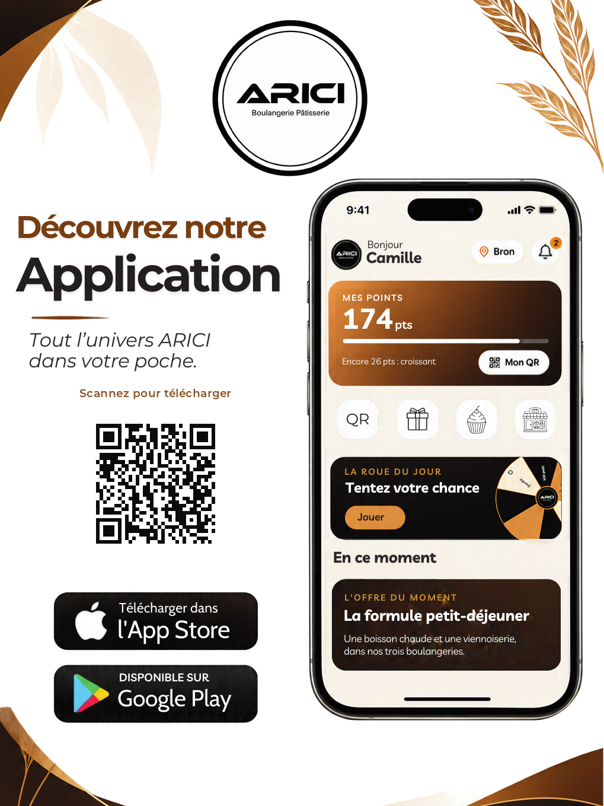</div>
  <div class="meta">
    <p class="aname"><span class="num">01</span>Le flyer</p>
    <p class="role">Charte à suivre et modèle exact de la dernière image.</p>
    <p class="file"><code>01_flyer_reference.png</code><span>1019×1358 · 773 Ko</span></p>
    <button type="button" class="dl" data-file="images/01_flyer_reference.png" data-name="01_flyer_reference.png">Télécharger</button>
  </div>
</li><li class="asset">
  <div class="thumb"><div class="pdf">PDF</div></div>
  <div class="meta">
    <p class="aname"><span class="num">02</span>Flyer source (PDF)</p>
    <p class="role">Calques séparés et placements exacts.</p>
    <p class="file"><code>02_flyer_source_calques.pdf</code><span>PDF 1 page · 1741 Ko</span></p>
    <button type="button" class="dl" data-file="images/02_flyer_source_calques.pdf" data-name="02_flyer_source_calques.pdf">Télécharger</button>
  </div>
</li><li class="asset">
  <div class="thumb"></div>
  <div class="meta">
    <p class="aname"><span class="num">03</span>QR officiel</p>
    <p class="role">Ouvre boulangeries-arici.fr/app. Doit rester scannable.</p>
    <p class="file"><code>03_qr_application_officiel.svg</code><span>vectoriel · 2 Ko</span></p>
    <button type="button" class="dl" data-file="images/03_qr_application_officiel.svg" data-name="03_qr_application_officiel.svg">Télécharger</button>
  </div>
</li><li class="asset">
  <div class="thumb">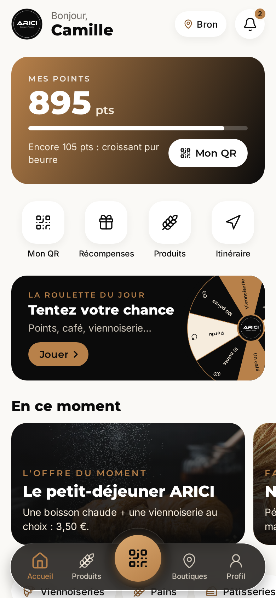</div>
  <div class="meta">
    <p class="aname"><span class="num">04</span>Écran Accueil</p>
    <p class="role">Vrai écran de l&#x27;app, à refaire en HTML/CSS.</p>
    <p class="file"><code>04_capture_app_accueil.png</code><span>780×1688 · 507 Ko</span></p>
    <button type="button" class="dl" data-file="images/04_capture_app_accueil.png" data-name="04_capture_app_accueil.png">Télécharger</button>
  </div>
</li><li class="asset">
  <div class="thumb">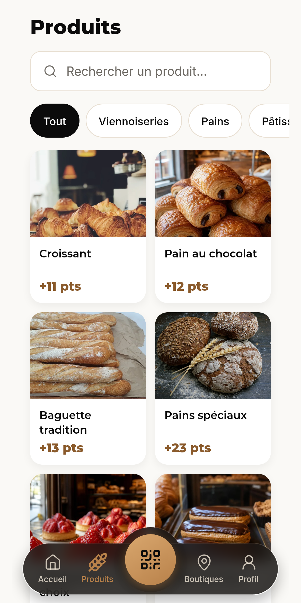</div>
  <div class="meta">
    <p class="aname"><span class="num">05</span>Écran Produits</p>
    <p class="role">Grille des produits avec les points.</p>
    <p class="file"><code>05_capture_app_produits.png</code><span>1170×2340 · 1544 Ko</span></p>
    <button type="button" class="dl" data-file="images/05_capture_app_produits.png" data-name="05_capture_app_produits.png">Télécharger</button>
  </div>
</li><li class="asset">
  <div class="thumb">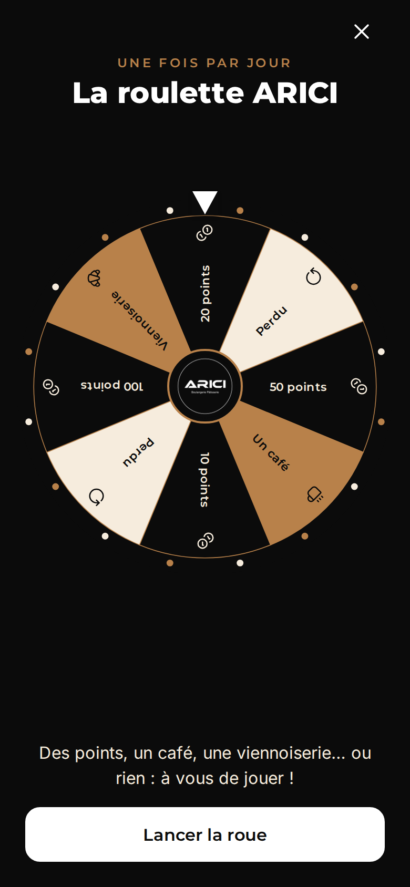</div>
  <div class="meta">
    <p class="aname"><span class="num">06</span>Écran Roulette</p>
    <p class="role">Cases exactes de la roue.</p>
    <p class="file"><code>06_capture_app_roulette.png</code><span>780×1688 · 126 Ko</span></p>
    <button type="button" class="dl" data-file="images/06_capture_app_roulette.png" data-name="06_capture_app_roulette.png">Télécharger</button>
  </div>
</li><li class="asset">
  <div class="thumb">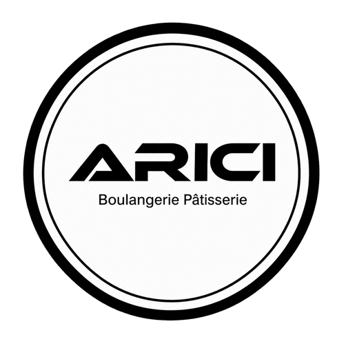</div>
  <div class="meta">
    <p class="aname"><span class="num">07</span>Logo rond</p>
    <p class="role">Logo noir et blanc du flyer, fond transparent.</p>
    <p class="file"><code>07_logo_arici_rond.png</code><span>502×502 · 165 Ko</span></p>
    <button type="button" class="dl" data-file="images/07_logo_arici_rond.png" data-name="07_logo_arici_rond.png">Télécharger</button>
  </div>
</li><li class="asset">
  <div class="thumb">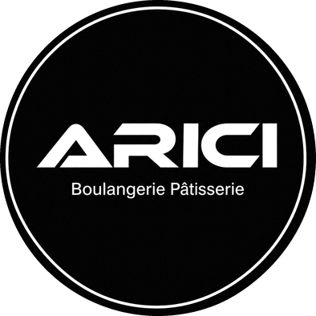</div>
  <div class="meta">
    <p class="aname"><span class="num">08</span>Avatar de l&#x27;app</p>
    <p class="role">Logo noir de l&#x27;en-tête et du moyeu de la roue.</p>
    <p class="file"><code>08_logo_arici_app_noir.png</code><span>394×394 · 150 Ko</span></p>
    <button type="button" class="dl" data-file="images/08_logo_arici_app_noir.png" data-name="08_logo_arici_app_noir.png">Télécharger</button>
  </div>
</li><li class="asset">
  <div class="thumb"></div>
  <div class="meta">
    <p class="aname"><span class="num">09</span>Épis de blé</p>
    <p class="role">Coin haut droit du flyer.</p>
    <p class="file"><code>09_deco_epis_de_ble.png</code><span>276×365 · 79 Ko</span></p>
    <button type="button" class="dl" data-file="images/09_deco_epis_de_ble.png" data-name="09_deco_epis_de_ble.png">Télécharger</button>
  </div>
</li><li class="asset">
  <div class="thumb"></div>
  <div class="meta">
    <p class="aname"><span class="num">10</span>Feuilles</p>
    <p class="role">Coin haut gauche, en premier plan flou.</p>
    <p class="file"><code>10_deco_feuilles.png</code><span>256×423 · 72 Ko</span></p>
    <button type="button" class="dl" data-file="images/10_deco_feuilles.png" data-name="10_deco_feuilles.png">Télécharger</button>
  </div>
</li><li class="asset">
  <div class="thumb"></div>
  <div class="meta">
    <p class="aname"><span class="num">11</span>Vague haut gauche</p>
    <p class="role">Vague espresso et filet doré.</p>
    <p class="file"><code>11_deco_vague_haut_gauche.png</code><span>453×308 · 59 Ko</span></p>
    <button type="button" class="dl" data-file="images/11_deco_vague_haut_gauche.png" data-name="11_deco_vague_haut_gauche.png">Télécharger</button>
  </div>
</li><li class="asset">
  <div class="thumb"></div>
  <div class="meta">
    <p class="aname"><span class="num">12</span>Vagues du bas</p>
    <p class="role">Coins bas gauche et bas droit.</p>
    <p class="file"><code>12_deco_vague_bas.png</code><span>1024×250 · 149 Ko</span></p>
    <button type="button" class="dl" data-file="images/12_deco_vague_bas.png" data-name="12_deco_vague_bas.png">Télécharger</button>
  </div>
</li><li class="asset">
  <div class="thumb">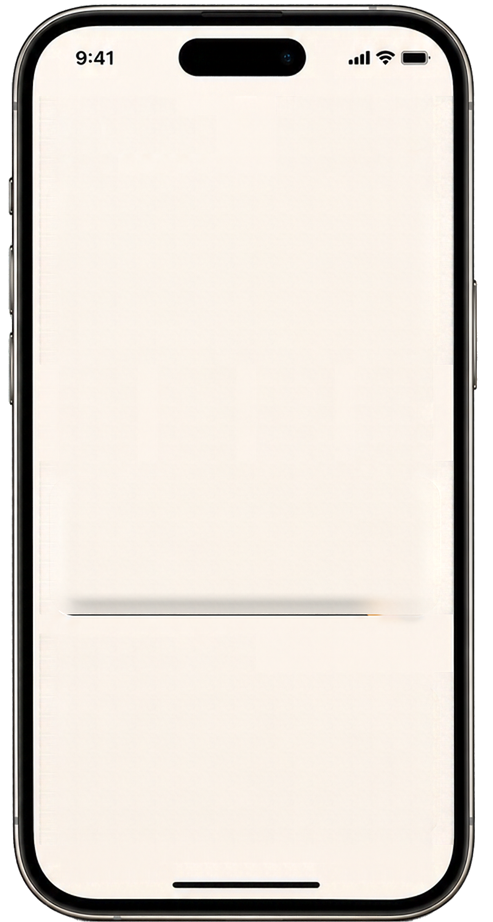</div>
  <div class="meta">
    <p class="aname"><span class="num">13</span>Téléphone du flyer</p>
    <p class="role">Modèle à reproduire en 3D.</p>
    <p class="file"><code>13_iphone_cadre_flyer.png</code><span>493×922 · 461 Ko</span></p>
    <button type="button" class="dl" data-file="images/13_iphone_cadre_flyer.png" data-name="13_iphone_cadre_flyer.png">Télécharger</button>
  </div>
</li><li class="asset">
  <div class="thumb"></div>
  <div class="meta">
    <p class="aname"><span class="num">14</span>Logo Apple</p>
    <p class="role">Pour le badge App Store.</p>
    <p class="file"><code>14_logo_apple.png</code><span>79×77 · 5 Ko</span></p>
    <button type="button" class="dl" data-file="images/14_logo_apple.png" data-name="14_logo_apple.png">Télécharger</button>
  </div>
</li><li class="asset">
  <div class="thumb"></div>
  <div class="meta">
    <p class="aname"><span class="num">15</span>Logo Google Play</p>
    <p class="role">Pour le badge Google Play.</p>
    <p class="file"><code>15_logo_google_play.png</code><span>79×77 · 6 Ko</span></p>
    <button type="button" class="dl" data-file="images/15_logo_google_play.png" data-name="15_logo_google_play.png">Télécharger</button>
  </div>
</li><li class="asset">
  <div class="thumb">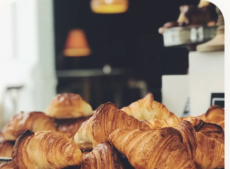</div>
  <div class="meta">
    <p class="aname"><span class="num">16</span>Croissant</p>
    <p class="role">Vraie photo, coins hauts arrondis à masquer.</p>
    <p class="file"><code>16_photo_croissant.png</code><span>461×339 · 168 Ko</span></p>
    <button type="button" class="dl" data-file="images/16_photo_croissant.png" data-name="16_photo_croissant.png">Télécharger</button>
  </div>
</li><li class="asset">
  <div class="thumb">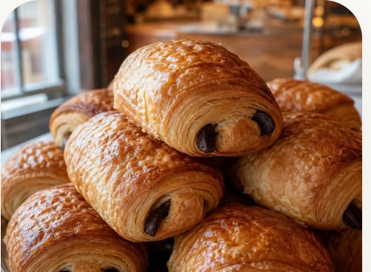</div>
  <div class="meta">
    <p class="aname"><span class="num">17</span>Pain au chocolat</p>
    <p class="role">Vraie photo.</p>
    <p class="file"><code>17_photo_pain_au_chocolat.png</code><span>462×339 · 268 Ko</span></p>
    <button type="button" class="dl" data-file="images/17_photo_pain_au_chocolat.png" data-name="17_photo_pain_au_chocolat.png">Télécharger</button>
  </div>
</li><li class="asset">
  <div class="thumb">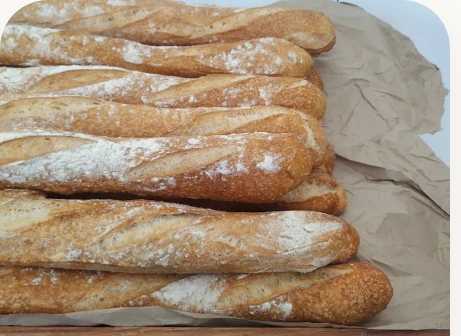</div>
  <div class="meta">
    <p class="aname"><span class="num">18</span>Baguette tradition</p>
    <p class="role">Vraie photo.</p>
    <p class="file"><code>18_photo_baguette_tradition.png</code><span>461×336 · 263 Ko</span></p>
    <button type="button" class="dl" data-file="images/18_photo_baguette_tradition.png" data-name="18_photo_baguette_tradition.png">Télécharger</button>
  </div>
</li><li class="asset">
  <div class="thumb">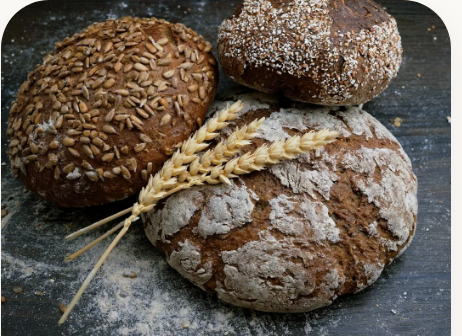</div>
  <div class="meta">
    <p class="aname"><span class="num">19</span>Pains spéciaux</p>
    <p class="role">Vraie photo.</p>
    <p class="file"><code>19_photo_pains_speciaux.png</code><span>462×336 · 329 Ko</span></p>
    <button type="button" class="dl" data-file="images/19_photo_pains_speciaux.png" data-name="19_photo_pains_speciaux.png">Télécharger</button>
  </div>
</li><li class="asset">
  <div class="thumb">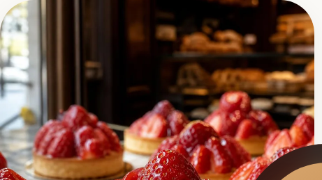</div>
  <div class="meta">
    <p class="aname"><span class="num">20</span>Tartelettes</p>
    <p class="role">Vraie photo, recadrée.</p>
    <p class="file"><code>20_photo_tartelettes.png</code><span>461×259 · 145 Ko</span></p>
    <button type="button" class="dl" data-file="images/20_photo_tartelettes.png" data-name="20_photo_tartelettes.png">Télécharger</button>
  </div>
</li><li class="asset">
  <div class="thumb">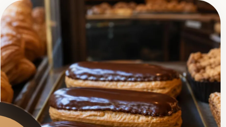</div>
  <div class="meta">
    <p class="aname"><span class="num">21</span>Éclairs</p>
    <p class="role">Vraie photo, recadrée.</p>
    <p class="file"><code>21_photo_eclairs.png</code><span>462×259 · 145 Ko</span></p>
    <button type="button" class="dl" data-file="images/21_photo_eclairs.png" data-name="21_photo_eclairs.png">Télécharger</button>
  </div>
</li><li class="asset">
  <div class="thumb">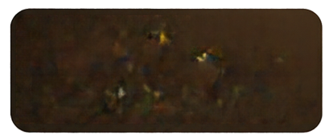</div>
  <div class="meta">
    <p class="aname"><span class="num">22</span>Texture « L&#x27;offre du moment »</p>
    <p class="role">Fond de la carte offre.</p>
    <p class="file"><code>22_texture_offre_du_moment.png</code><span>414×173 · 80 Ko</span></p>
    <button type="button" class="dl" data-file="images/22_texture_offre_du_moment.png" data-name="22_texture_offre_du_moment.png">Télécharger</button>
  </div>
</li>
      </ul>
    </section>

    <section>
      <h2>Polices</h2>
      <p class="sub">Montserrat pour les titres, Inter pour les petits textes d'interface.</p>
      <ul class="fonts"><li><code>Montserrat-Variable.ttf</code><span>727 Ko</span><button type="button" class="dl" data-file="polices/Montserrat-Variable.ttf" data-name="Montserrat-Variable.ttf">Télécharger</button></li><li><code>Montserrat-Italic-Variable.ttf</code><span>745 Ko</span><button type="button" class="dl" data-file="polices/Montserrat-Italic-Variable.ttf" data-name="Montserrat-Italic-Variable.ttf">Télécharger</button></li><li><code>Inter-Variable.ttf</code><span>856 Ko</span><button type="button" class="dl" data-file="polices/Inter-Variable.ttf" data-name="Inter-Variable.ttf">Télécharger</button></li></ul>
    </section>

    <p class="note">La vidéo est sans son : sur Instagram, vous pourrez ajouter une musique au moment de publier.</p>
  </div>
</main>

<script src="https://cdnjs.cloudflare.com/ajax/libs/jszip/3.10.1/jszip.min.js"></script>
<script>
(function () {
  var FILES = ["images/01_flyer_reference.png", "images/02_flyer_source_calques.pdf", "images/03_qr_application_officiel.svg", "images/04_capture_app_accueil.png", "images/05_capture_app_produits.png", "images/06_capture_app_roulette.png", "images/07_logo_arici_rond.png", "images/08_logo_arici_app_noir.png", "images/09_deco_epis_de_ble.png", "images/10_deco_feuilles.png", "images/11_deco_vague_haut_gauche.png", "images/12_deco_vague_bas.png", "images/13_iphone_cadre_flyer.png", "images/14_logo_apple.png", "images/15_logo_google_play.png", "images/16_photo_croissant.png", "images/17_photo_pain_au_chocolat.png", "images/18_photo_baguette_tradition.png", "images/19_photo_pains_speciaux.png", "images/20_photo_tartelettes.png", "images/21_photo_eclairs.png", "images/22_texture_offre_du_moment.png", "polices/Montserrat-Variable.ttf", "polices/Montserrat-Italic-Variable.ttf", "polices/Inter-Variable.ttf", "PROMPTS.md"];
  var statusEl = document.getElementById('status');
  var zipBtn = document.getElementById('zip');
  var downloads = null;
  function say(t) { statusEl.textContent = t; }

  document.querySelectorAll('.copy').forEach(function (b) {
    b.addEventListener('click', function () {
      var pre = document.getElementById(b.dataset.target);
      var text = pre.textContent;
      var done = function () { b.textContent = 'Copié'; b.classList.add('ok'); setTimeout(function () { b.textContent = 'Copier'; b.classList.remove('ok'); }, 1800); };
      var fallback = function () {
        var r = document.createRange(); r.selectNodeContents(pre);
        var s = window.getSelection(); s.removeAllRanges(); s.addRange(r);
        b.textContent = 'Texte sélectionné';
      };
      try { navigator.clipboard.writeText(text).then(done, fallback); } catch (e) { fallback(); }
    });
  });

  function errText(e) {
    var c = e && e.code;
    if (c === 'declined') return 'Téléchargement annulé.';
    if (c === 'rate_limited') return 'Une fenêtre de téléchargement est déjà ouverte.';
    return 'Le téléchargement n\u2019a pas abouti dans cette vue. Utilisez le dossier sur GitHub.';
  }

  function save(name, blob) {
    return downloads.save({ filename: name, data: blob }).then(function () { say(name + ' enregistré.'); }, function (e) { say(errText(e)); });
  }

  document.querySelectorAll('.dl').forEach(function (b) {
    b.addEventListener('click', function () {
      if (!downloads) return;
      fetch(b.dataset.file).then(function (r) { if (!r.ok) throw new Error(r.status); return r.blob(); })
        .then(function (blob) { return save(b.dataset.name, blob); })
        .catch(function () { say('Fichier introuvable : ' + b.dataset.name); });
    });
  });

  zipBtn.addEventListener('click', function () {
    if (!downloads || !window.JSZip) { say('Le téléchargement direct n\u2019est pas disponible ici. Utilisez le dossier sur GitHub.'); return; }
    zipBtn.disabled = true; say('Préparation du .zip…');
    var zip = new JSZip();
    var root = zip.folder('kit-video-ARICI');
    Promise.all(FILES.map(function (f) {
      return fetch(f).then(function (r) { if (!r.ok) throw new Error(f); return r.blob(); }).then(function (b) { root.file(f, b); });
    })).then(function () {
      return zip.generateAsync({ type: 'blob' });
    }).then(function (blob) {
      return save('kit-video-ARICI.zip', blob);
    }).catch(function () { say('Impossible de préparer le .zip. Utilisez le dossier sur GitHub.'); })
      .then(function () { zipBtn.disabled = false; });
  });

  if (window.claude && window.claude.use) {
    window.claude.use('downloads').then(function (d) {
      downloads = d;
      if (!d) { document.body.classList.add('nodl'); }
    }, function () { document.body.classList.add('nodl'); });
  } else {
    document.body.classList.add('nodl');
  }
})();
</script>
